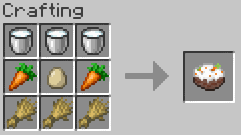

Bolo de Cenoura com Cobertura de Chocolate
Um clássico brasileiro, perfeito para o café da tarde. Fofinho, fácil de fazer e com uma cobertura que derrete na boca!

Processo de preparo do bolo de cenoura (sem cobertura porque o chocolate de boa qualidade é caro)
Ingredientes
- 3 cenouras médias
- 4 ovos
- Meia xícara de óleo
- 2 xícaras de açúcar
- 2 e meia xícaras de farinha de trigo
- 1 colher de sopa de fermento em pó
Modo de Preparo
- Bata no liquidificador as cenouras, os ovos e o óleo.
- Despeje a mistura em uma tigela e acrescente o açúcar e a farinha.
- Misture bem até ficar homogêneo.
- Por último, adicione o fermento e misture delicadamente.
- Asse em forno pré-aquecido a 180 graus por cerca de 40 minutos.
Informações Extras
Tempo de preparo: 50 minutos
Rendimento: 8 porções
Dificuldade: Fácil
Clique aqui para buscar mais receitas no Google.